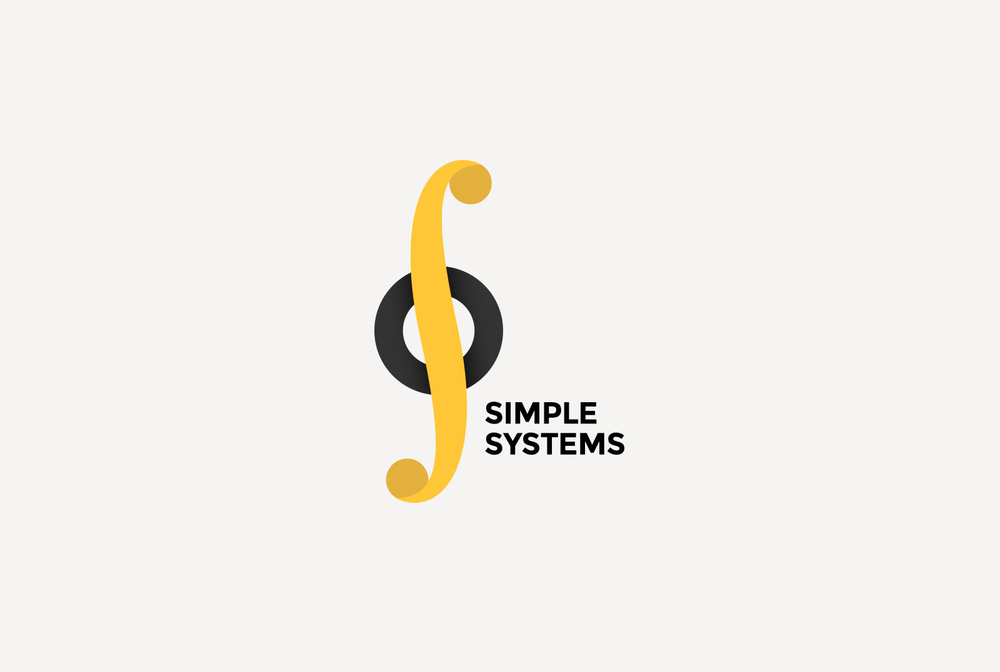
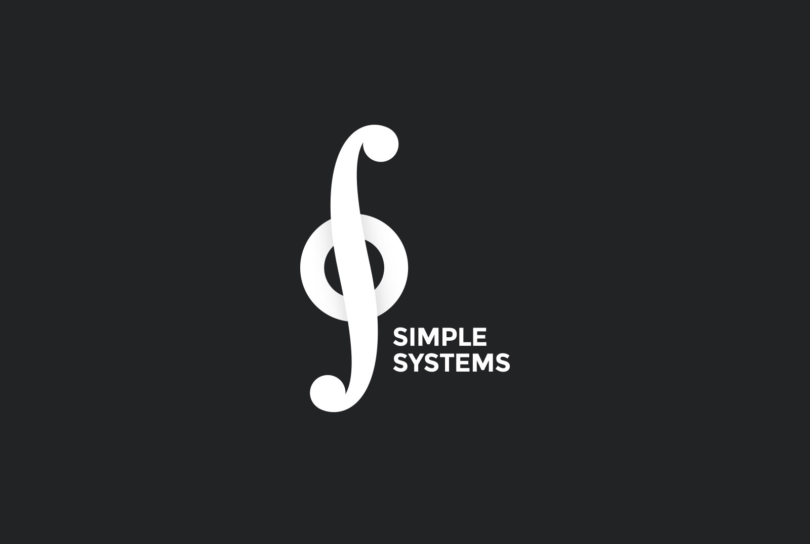
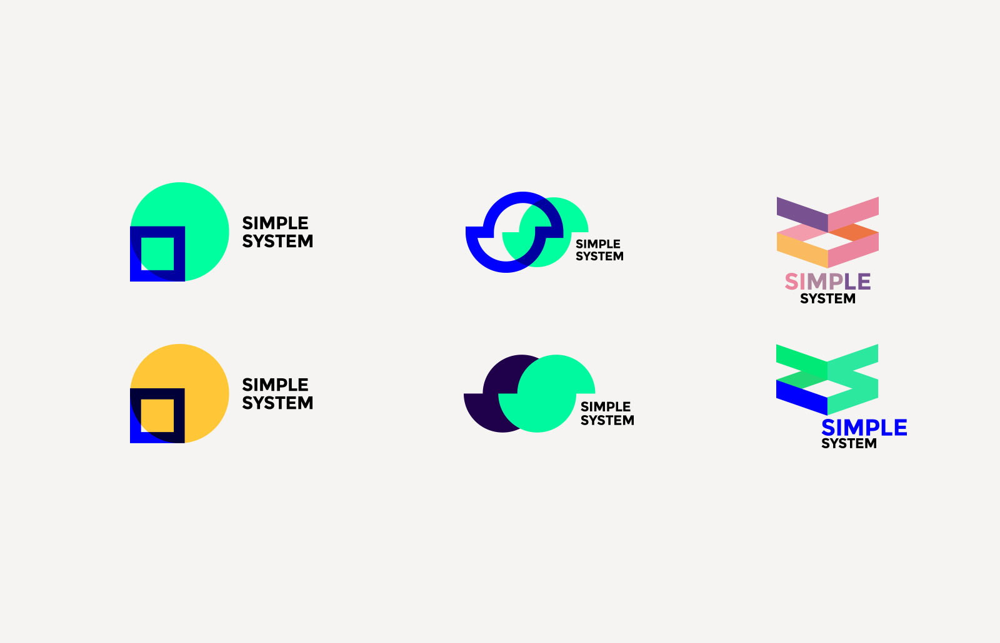
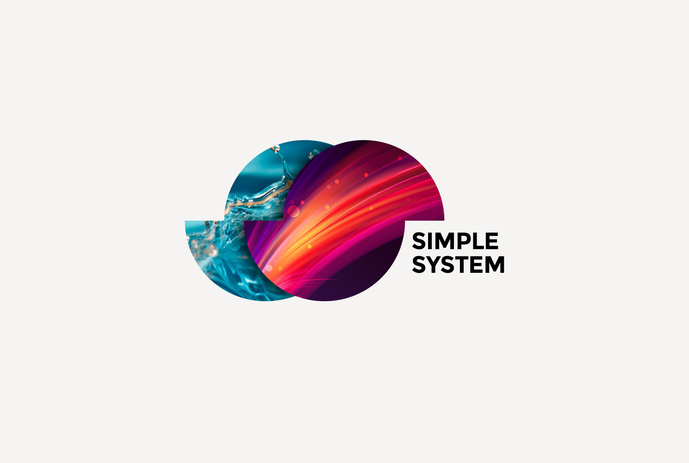
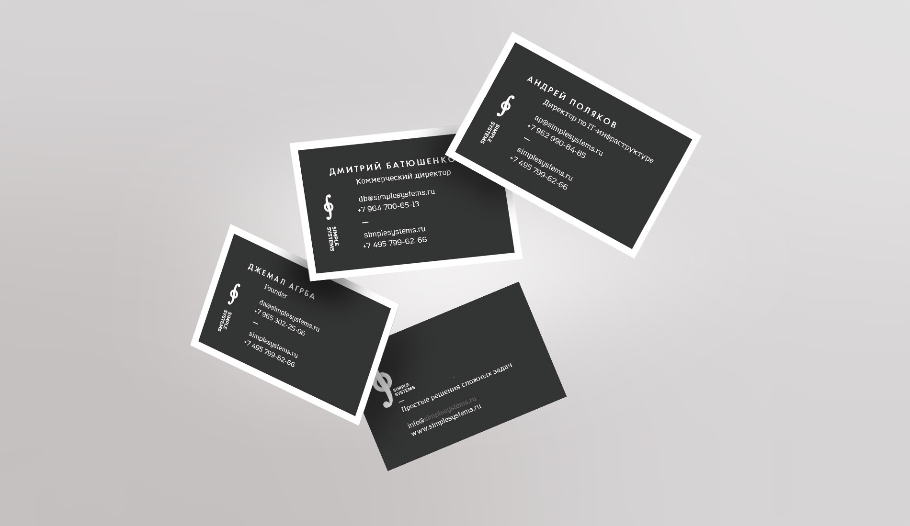

21 марта 2015
Логотип Simple Systems
Клиент озвучивает название — Simple System. Позже System трансформируется в Systems.
Литера S — значок интеграла. «Простые Системы» просты для пользователей. Но в их сердце — сложные технологичные решения.
Результат
Так же по желанию клиента было создано несколько цветовых решений Версия на темном фоне
Версия на темном фоне

Процесс создания
Один из любимых вариантов автора
Бонусом к логотипу стали строгие корпоративные визитки
Сайт Simple Systems
Поставлена задача — в сжатые сроки сделать простой и понятный сайт. В основу были положены принципы изящной типографики: аккуратная сетка, красивые шрифты. Далее сайту была добавлена дополнительная динамика при помощи параллакс-эффекта.
Решенные задачи: дизайн, разработка.
Сроки: 1 неделя.
Parallax Scrolling — эффект при котором несколько фоновых слоев двигаются с разной скоростью, что создает ощущение трехмерного пространства.
 Несколько трендовых хэирлайн-иконок
Несколько трендовых хэирлайн-иконок

ООО «Платежные системы»
В рамках наших общих проектов, во всех случаях Саша показал, что значит делать работу хорошо и в срок. Приятно, что он понимает суть задачи и четко подходит к её реализации.
Карачинский — это ярко и охуенно.